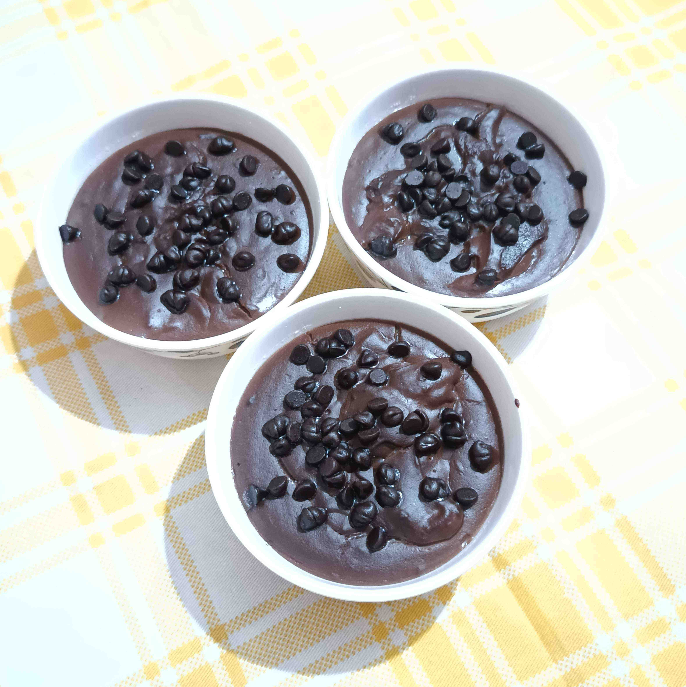

Home
Brownies
Cakes
Chocolate Pudding

Ingredients
400ml Milk
50gm Powdered Sugar
50gm Fresh Cream
50gm Cocoa Powder
50gm Corn Flour/White Flour
Chocolate Chips (for garnishing)
Instructions
In a bowl, add 300ml Milk, cocoa powder and corn flour.
Mix well and keep it aside.
In a pan, add 100ml milk, powdered sugar and fresh cream. Mix well in low flame.
Add the prepared mixture into the pan.
Cook until the whole mixture is thick.
Pour the mixture into small bowls & refrigerate for 7-8 hours.
Garnish with chocolate chips on top.